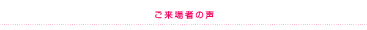
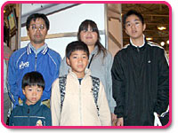
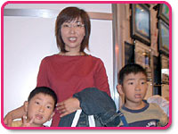
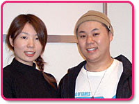
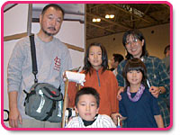
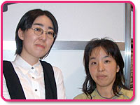
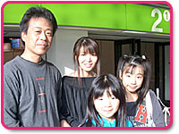
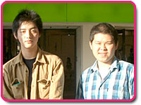
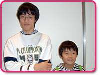

|

| 会場内では多数の試遊台が置かれ、ゲームに触れるのを楽しみにしていた人々が顔を輝かせて遊んでいました。では、実際に遊んでくれたみなさんにコメントを聞いてみましょう。新しいゲームの感想はどうだったのかな？ |

まずはご家族で豊田市から遊びに来ていた西さんご一家。西靖史さん、美鶴さん、郁弥さん（13歳）、隼人くん（10歳）、輝生くん（６歳）。
輝生くんはポケモンダッシュを体験したところでしたが、「ペン操作がちょっとだけむずかしかったけど、楽しかった。ほかにもいろいろやりたい」と嬉しそうに周りを見ていました。 |

スーパーマリオ64
DSの体験コーナーから出てきたのは、知立市からお越しのご家族。
西江陽子さん、一志くん（８歳）、公平くん（６歳）。「やってみたら簡単だった。とても面白かった」とのコメント。公平くんがほしいソフトは『マリオテニスGC』だそうで、サンタクロースにクリスマスプレゼントとしてお願いするんだそうですよ。 |
| バルーントリップの体験プレイを終えたカップルは、名古屋市からお越しの村田修さん、山田裕美さん。それぞれ『スーパーマリオ64
DS』と『どうぶつの森DS』を楽しみにしているそうです。実際にニンテンドーDSを体験してみた感想は、「ペンで操作したときのレスポンスがとても早くて、気持ちよかった」とのこと。操作も簡単でやりやすかった、とお話ししてくれました。 |
| 瀬戸市から５人でやって来たのは後藤次郎さん、朝子さん、風香ちゃん（11歳）、凪くん（10歳）、波流くん（８歳）。凪くんは『タッチ！ カービィ』を驚きのハイテクニックでプレイ。編集長もビックリでした。「タッチペンでカービィが走っていくのが面白かった」そうです。また『さわる メイドインワリオ』も楽しかったよう。風香ちゃんも『牧場物語
for DS』が楽しかったようです。波流くんは「カービィはちょっとむずかしかった」との感想でした。 |
| メディアも注目する『Nintendogs』を遊んでいたのは、プラチナ会員の磯部美江さんと、松井綾子さん。それぞれ犬を飼っているそうで、本物の犬さながらのリアルな動きに驚いていました。「なでるポイントが、『ああそうそう』という所ばかりで、すごいなと思いました」「自宅には１匹しか飼えないので、ゲーム内で３匹もいると嬉しい」とのことでしたよ。 |
| 菱田貴久さん、弘子さん、久瑠美さん（12歳）、侑里ちゃん（９歳）は、一家で岐阜県から。久瑠美さんは「『さわる メイドインワリオ』をやりました。タッチペンは操作しやすくて、楽しかったです」と教えてくれました。妹の侑里ちゃんは『牧場物語 for DS』をプレイ。「ひよこと仲良く慣れたのが、かわいくて楽しかった。タッチペンを使って動かせるのがよかった」そうです。 |
| 学校の同級生だという２人は、柴田利彦さんと端本航さん。『Nintendogs』を遊んで、「犬と遊ぶというよりは、犬に遊ばれている感じでした(笑)」とのコメントが。ニンテンドーDSタイトルは予想以上に楽しく遊べたそうで、笑顔で答えてくださいました。柴田さんは「ゲームキューブで出るゼルダが楽しみ」とのこと。ペンで操作することにも慣れないと…と言っていましたよ。 |
| 村上翔さん（16歳）、拓くん（10歳）は名古屋市内から兄弟で遊びに来てくれました。お兄さんはピクトチャットのワイヤレスに注目。ケーブル不要でやりやすかったそうです。「ただ、ちょっと画面が小さく感じたかも…」との言葉も。RPGのジャンルに期待しているそうですよ。弟の拓くんは、タッチペンでいろいろと操作してみたいという期待が。このさきが楽しみですね。 |
| 「今日は『NINTENDO WORLD Touch！ DS』へこんなにたくさんの方々にお越しいただいて、ありがとうございました。足を運んでくださったみなさんとお会いできて、たいへん嬉しく思っています。このイベントはこのあとも全国４カ所で開催されます。新ハードであるNINTENDO DSに発売前に直接触れることができる機会です。ぜひ発売前に体験して、その新しさ、楽しさに触れてください」 |

|
|